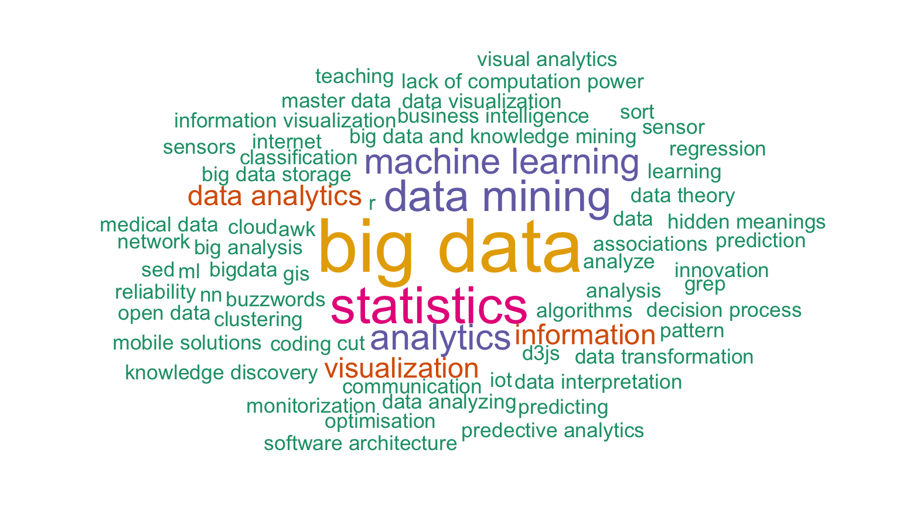
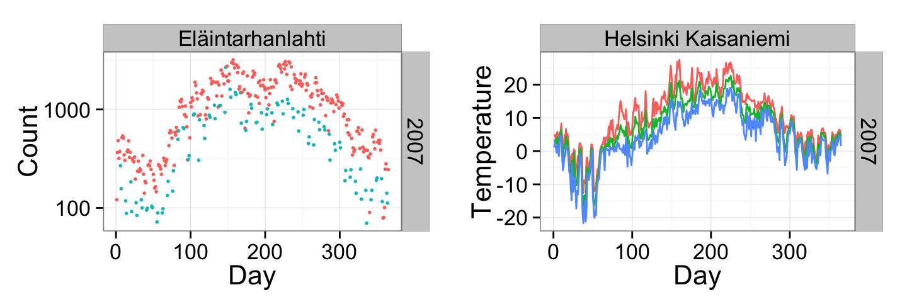
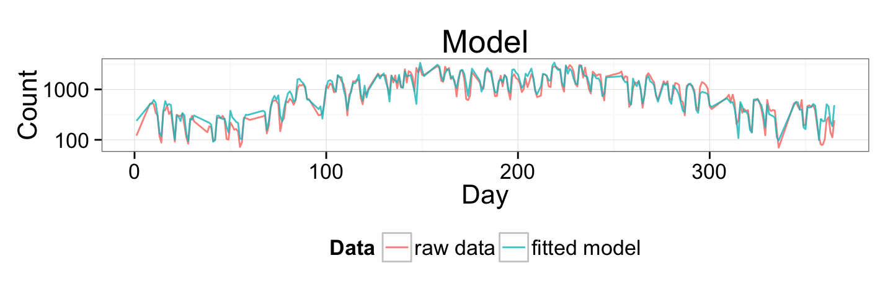
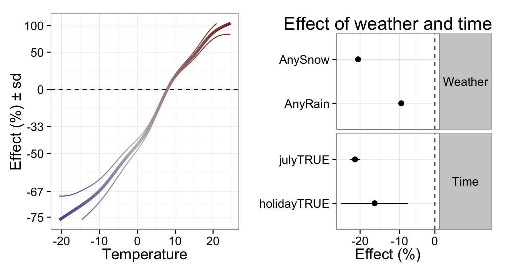
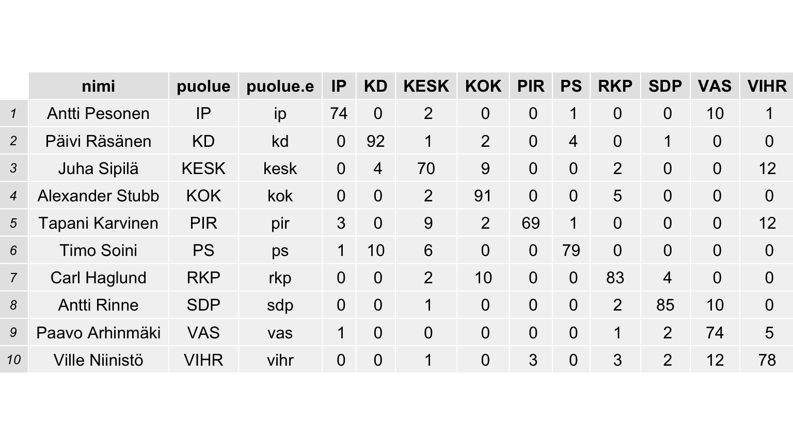

Programmatic Content Management course @TampereUniTech, 28 Apr 2015, #ohsiha
Part 1: What is data science?
What do you think?

What do others think?
"Data Science is statistics on a Mac" -Big Data Borat on Twitter
"Big data is like teenage sex: everyone talks about it, nobody really knows how to do it, everyone thinks everyone else is doing it, so everyone claims they are doing it…" -Dan Ariely on Facebook
"Data science is the process of formulating a quantitative question that can be answered with data, collecting and cleaning the data, analyzing the data, and communicating the answer to the question to a relevant audience." -simply stats
What do I think?
There are multiple definitions from various points of views, all at least partially relevant pieces of the whole.
Important questions:
- Where can data science be applied?
- What is doing data science in practice?
- What does it mean to be data-driven?
- What data science can NOT do?
Why should you care?
It is important to understand at least the basics of data science, statistics & algorithms, because
- almost everything can (and will) be quantified and the data will increasingly affect our everyday lives.
- working with data offers a wide range of interesting opportunities.
- more and more data science services will be used, good to know what they are about.
Where can data be applied?
- Business
- Improved (personalised) services
- Optimised operations
- Quantitative research
- Natural sciences
- Also social sciences
- Social good
- Journalism
- Software development (lean / agile)
- Quantified self
- …


Improved personalised services
- Sources: stanford2009 and cantech letter

Nate Silver predicting the Presidential election results in 2012
- Source: DataPsych

Using Satellite Images to Understand Poverty
- Source: DataKind

Using big data to prevent homelessness in New York
- Source: Sumall.org
Factor analysis of election machine results
- Source: Yle 13.4.2015
Part 2: Data science at Reaktor
My journey towards data science
Studies at Aalto (former Helsinki University of Technology)
- Statistical machine learning and bioinformatics
- Dissertation: Probabilistic components of molecular interactions and drug responses
Data scientist at Reaktor
Open tools for open data: Louhos & rOpenGov
Interests: probabilistic (Bayesian) modeling, information visualization, open source/data/science
I like: solving hard problems in various fields, learning and sharing
Biking in Helsinki

Some results

Read more at Kaupunkifillari: Pyöräily on arkista touhua and check the code at GitHub.
Election data

Personal level

Done by Johan Himberg, read more from Louhos blog!
Data science vs. data journalism?
Reaktor data science
Data-driven solutions for any business problems
Focus on statistical modeling
Tough, non-standard problems
Open source tools
Consulting!
Part 3: Data science in practice
Data science use cases
Data science skills


- Sources: Drew Conway and Policyviz
Individual or team?!

- Source: Marketingdistillery
Data science process
- Define the question of interest
- Get the data
- Clean the data
- Explore the data
- Fit statistical models
- Communicate the results
- Make your analysis reproducible
- (Iterate!)
According to interviews and expert estimates, 50-80 % of data scientists' time is spent on handcrafted work (data "wrangling/munging"). -New York Times 18.8.2014
Key steps in data analysis
Exploratory data analysis
- goal: find out whether the data fits the question of interest
- visualise data
- identify missing values
Probabilistic modeling
- goal: make reliable inference based on data
- principled way to include prior assumptions
- dealing with noisy and missing data
- taking uncertainty into account
- combining multiple data sources
- understanding relationships between variables
- uncover hidden structure
- predict missing data and future events
Data science in action!
- Photos: Juuso Parkkinen
Some basic tools
- Statistics & computation: R, Python
- Databases: SQL, noSQL (e.g. MongoDB)
- Big data: Hadoop, Spark
- Visualization: ggplot2 (R), matplotlib (Python), d3, Leaflet
- See more open source tools in the Extra section in the end
It's not always complicated!

Hans Rosling communicating facts about the world
- Source: Everything is Naked
Part 4: Data-driven culture
What is important in the data science process?
data science tools & products
< statistical methods
< data access & munging
< business case
< getting to production
- Modified from Louhia's blog post
But! None of these matter unless you have a data-driven mindset…
Ideals of being data-driven
- be curious (seek for evidence)
- be active (test, don’t just observe and analyse)
- be Bayesian (understand uncertainties)
- be courageous (act on the evidence)
- be agile (learn, fail fast… but not too fast: collect enough evidence)
- be transparent and helpful (show and share information, co-operate)
- be truthful and non-political (don’t abuse data, work across silos)
- be wise (there is a time to be data-driven and a time to be intuitive)
"Culture eats strategy for breakfast"
- (attributed to P. Drucker, popularised by M. Fields)
Experimentation
- Evidence-based decision making
- Empirism
- A/B testing
- Lean startup
- Agile development
- "One experiment is worth a thousand meetings." -@samihonkonen

Part 5: Is data almighty?
Hype

- Source: Gartner
Problems with Big Data?
Big data is (OCCAM)
- Observational: much of the new data come from sensors or tracking devices that monitor continuously and indiscriminately without design, as opposed to questionnaires, interviews, or experiments with purposeful design
- Lacking Controls: controls are typically unavailable, making valid comparisons and analysis more difficult
- Seemingly Complete: the availability of data for most measurable units and the sheer volume of data generated is unprecedented, but more data creates more false leads and blind alleys, complicating the search for meaningful, predictable structure
- Adapted: third parties collect the data, often for a purposes unrelated to the data scientists’, presenting challenges of interpretation
- Merged: different datasets are combined, exacerbating the problems relating to lack of definition and misaligned objectives
- Source: Kaiser Fung on HBR
Conclusion: Amount of data does not matter, but how it was collected!
What can go wrong?
- Misunderstanding p-values, The Statistical Crisis in Science -Andrew Gelman
- Understanding uncertainty & probabilities, cognitive biases: Thinking, Fast and Slow
- What can be predicted and what not: Black Swan
- Statistics done wrong
- Pitfalls in Analytics (in Finnish, by Louhia)
Causality vs. correlation


- Source: Tylergive
Concluding…
Some interesting trends
- Openness
- Mydata
- Quantified self
Conclusions
Recap: Understand statistics, because
- almost everything can (and will) be quantified and the data will increasingly affect our everyday lives.
- working with data offers a wide range of interesting opportunities.
- more and more data science services will be used, good to know what they are about.
Also
- Data can provide value in numerous ways.
- Type and quality of data matters more than its amount.
- Data-driven culture: make decisions based on experiments!
Extra
Extra
- Open data science (analyses, tools, data)
- Data science communities in Finland
Extra: Open data science analyses
Make your analyses transparent and reproducible! PDF report is not that!
Reproducible R scripts
- rmarkdown
- knitr
- See the rmarkdown source for this slide set!
Extra: Open data science tools
Open source tools are replacing commercial ones in many DS tasks
- Statistics & computation: R, Python
- Databases: SQL, noSQL (e.g. MongoDB)
- Big data: Hadoop, Spark
- Visualization: ggplot2 (R), matplotlib (Python), d3, Leaflet
- Web stuff: shiny (R)
- Version control: git
- (Open Office)
- More: landscape of open source tools for data science
Extra: Open data
Open data sets offer excellent playground for learning new stuff!
- Scientific data: rOpenSci
- Government data: rOpenGov
- More: Datasets for Data Mining and Data Science
Check also iPython notebooks!
Extra: Data science communities in Finland
Helsinki
- Helsinki Data Analytics & Science Meetup
- Linkedin group: "Helsinki Data Science"
Tampere?
Other
- #r-project & #louhos @IRCnet
- Open Knowledge Finland
- Finnish Open Data Ecosystem